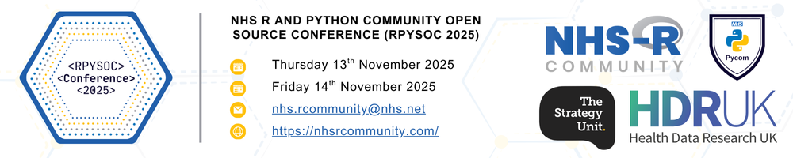
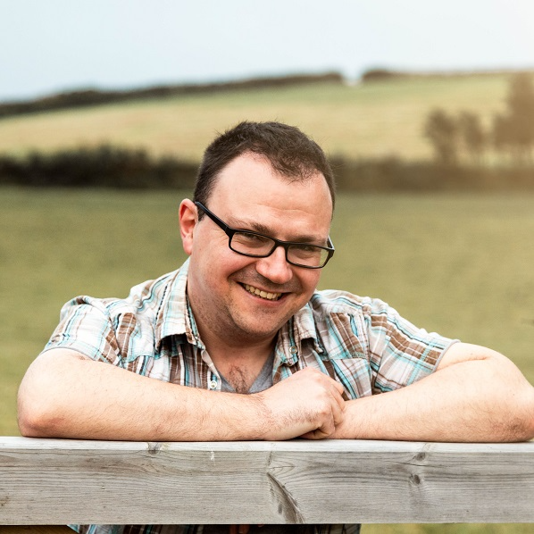

RPySOC 2025
NHS-R/NHS.pycom Open Source Conference

We are pleased to announce that the RPYSOC 2025 conference will be held at the Wellcome Trust, London, offering both 🏃♀️ in-person and 💻 virtual attendance options!
Conference dates:
- Thursday 13th November 2025
- Friday 14th November 2025
Registration
Registration for RPySOC 2025 is now OPEN, and will close at 23:59 on the 3rd November 2025.
To register for either in person or online tickets, please CLICK HERE.
All tickets are free, and lunch and refreshments are provided to all in person delegates.
Please note that RPySOC 2025 will be hosted in partnership with Health Data Research UK and The Wellcome Trust. The information you provide when registering to attend the conference will be used to set-up your access to the in-person and/or virtual event and will be visible to the Conference Team (NHS-R Community, NHS Python Community, The Strategy Unit), Health Data Research UK, The Wellcome Trust and other registered participants for conference-related purposes, such as session participation, networking, and presenter engagement.
Programme
Day 1 - Thursday 13th November
| 09:00 | Registration and refreshments | |
| 10:00 | Welcome and safety briefing | Dr Claire Welsh |
| 10:20 | Total Eclipse of the Excel Chart - A reflection on 12 years of teaching modelling and data science in the NHS | Dr Dan Chalk |
| 10:50 | TBC | Cara Thompson |
| 11:20 | BREAK | |
| 11:40 | Using open data and open source code to create an open elective waiting lists modelling tool (RTT Planner) | Sebastian Fox |
| 12:00 | Using APIs in R to obtain Health indicators for interactive visualizations | Pablo Leon-Rodenas |
| 12:20 | opencodecounts: An R package and Shiny app exploring NHS clinical coding data | Milan Wiedemann |
| 12:30 | DES-igning Better Flow: Modelling Non-Elective Admissions | Helena Robinson |
| 12:40 | Mapping Accessibility: Using R5py and GTFS Data to Optimise Women’s Health Hub Locations in the Sussex | Karrie Liu |
| 12:50 | A Short Story of a Short Course - Natural Language Processing in R for Health and Social Care | Pawel Orzechowski and Brittany Blankinship |
| 13:00 | LUNCH | |
| 14:00 | Design a model for Community pharmacy workforce with open source data | Chaeyoon Kim |
| 14:20 | Word is better than Quarto? | Jacqueline Grout and Matt Dray |
| 14:40 | Deploying Python in production: containers, kubernetes and embracing yaml | Amadeus Stevenson |
| 15:00 | Modelling Community waiting lists with NHS-R waiting list library | Simon Wellesley-Miller |
| 15:10 | Transforming Health Needs Assessments: Reproducible Insights for Smarter NHS Planning | Rachel Christie |
| 15:20 | Building QA into everyday workflows with GitHub | Rhian Davies |
| 15:30 | BREAK | |
| 15:50 | The story of patientflow: from hospital prototype to Python package | Zella King |
| 16:10 | Going for Gold: Adopting RAP-by-default to Create Analysts from Nowhere. | Joe Wilson |
| 16:30 | Zhuzhing custom error messages with {cli} | Fran Barton |
| 16:40 | Shattered pottery and cancer data: using R to rejoin the pieces | Joe Shaw |
| 16:50 | Day 1 closing remarks | HDR UK |
| 17:00 | CLOSE of day 1 |
Day 2 - Friday 14th November
Please note - we will be running the Unconference throughout day 2 on level 6 of the Wellcome Trust (see signage for directions or contact a member of the conference staff for details)
| 09:00 | Registration and refreshments | |
| 10:00 | Welcome and safety brief | Dr Claire Welsh and HDR UK |
| 10:20 | Reusable by Default: Reflections on Building Sustainable Open Tools and Knowledge for Healthcare | Dr Sammi Rosser |
| 10:50 | 3 years on NHS-RPy Unconference: open, self-organising exchange of ideas | Pawel Orzechowski and Brittany Blankinship |
| 11:00 | Practical Testing for Reproducible Analytical Pipelines | Thomas Jemmett |
| 11:20 | BREAK | |
| 11:40 | How we delivered the OpenSAFELY platform to analyse the whole population’s GP records securely, transparently, with open code | Prof Ben Goldacre |
| 12:10 | Patient-Level Analytics That Work: Using R to Achieve Rapid, Sustained MRSA Screening Compliance Improvements | Daniel Weiand |
| 12:30 | Using simulation to evaluate a service: what to do when you’ve got no data, no clear questions, and no clue if it’s working: | Chris Mainey |
| 12:50 | Making national cancer audit reporting Shiny: a journey from Excel to web-based apps using R and Reproducible Analytical Pipelines. | Ella Barber |
| 13:00 | LUNCH | |
| 14:00 | Data Querying using Natural Language | Abhinav Jindal (Jin) |
| 14:10 | MetaInsight - an R shiny app for network meta-analysis | Simon Smart |
| 14:20 | Better together: lessons from RAP drop-ins | YiWen Hon |
| 14:30 | Predicting Outpatient Non-Attendance | Peter Andrews |
| 14:40 | Learnings from implementing machine learning models on NHS Federated Data Platform for predicting operational pressures escalation levels. | Kenneth Quan |
| 14:50 | Introduction to Causal Inference for R and Python users | Nathan Thomas |
| 15:10 | Publishing reproducible websites using R Quarto: Camden’s JSNA Hub | Annie Yu |
| 15:20 | What Patients Ask: Harnessing Free-Text Data for Patient-Centred Care | Mimi Reyburn |
| 15:30 | Closing remarks | Dr Claire Welsh and HDR UK |
| 16:00 | CLOSE of day 2 |
We are excited to announce that the following keynote speakers will be presenting at RPySOC 2025!:

Please post all questions for speakers in the conference Slack channel. Check back regularly as speakers will respond when they can.
Delegate Information Pack
🕌 Venue details
Wellcome Trust, Gibbs Building, 215 Euston Road, London NW1 2BE
🚗 Travel and accessibility
Please refer to the Wellcome Trust website for travel and site accessibility advice.
If you would like us to reserve you a seat in the main auditorium please email us at nhs.rcommunity@nhs.net.
Data Collection
Please be advised that any data/information collected (from you) before, during and after RPySOC 2025 will be used for the purpose of administration within the NHS-R Community, NHS Python Community, The Strategy Unit and event co-sponsors. Your data/information will not be disclosed to any third party, except within the terms of UK General Data Protection Regulation (UK GDPR) and the UK Data Protection Act 2018. The data/information will also be used to support the NHS-R Community’s, NHS Python Community’s, The Strategy Unit’s and event co-sponsors’ event management, marketing and market research activities.
To see our host organisation’s (NHS Midlands and Lancashire) Privacy Policy please CLICK HERE
Recordings and Photography
Where possible, conference talks and activities will be recorded and published online. If you would NOT like to be recorded, please make the Conference Team aware via the event registration form, an email to nhs.rcommunity@nhs.net, by direct message on Slack and/or to the Conference Team in-person.
A photographer will be present at The Wellcome Trust, if you would NOT like to be photographed and have your image published online, please make the Conference Team aware via the event registration form, an email to nhs.rcommunity@nhs.net, by direct message on Slack and/or to the Conference Team in-person.
If for any reason you wish to withdraw your consent for any of the aforementioned, please email the Conference Team via nhs.rcommunity@nhs.net.
Getting around the venue
👩✈️ Chaperone service
The main conference hall is on Level 7. We also have a quiet room, prayer room, and the Unconference, which will be held on Level 6. Access to each floor in the building is strictly by chaperone, thus you will need to be escorted between floors, and in and out of the building. We will be operating a separate Slack channel (#rpysoc25_chaperone) devoted to this. If you require to access a different floor, please make your way to the Chaperone Waiting Station and add a message to the Slack channel to request a member of HDR UK to chaperone you.
🤐 Venue room access
Please note that the Wellcome Trust is a busy working office building. We have kindly been granted use of a number of rooms over the two days of the conference, but there will be some rooms marked as ‘off limits’ for delegates. Please respect these signs and our generous sponsors by avoiding making excessive noise around these rooms or attempting to enter.
☎️ Space for calls
There are individual pods on the main conference floor which you can use to make phonecalls.
🎒 Cloakroom
A cloakroom will also be available on level 7 for storing luggage, but please note, all items are left at the owners risk and neither NHS-R, HDR UK nor the Wellcome Trust accept any liability for items that may be lost, stolen or damaged.